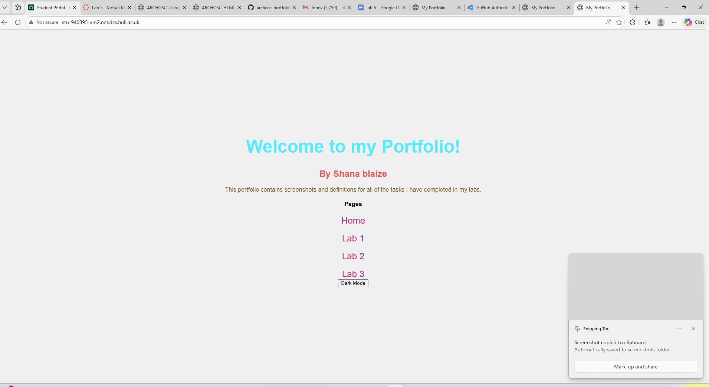
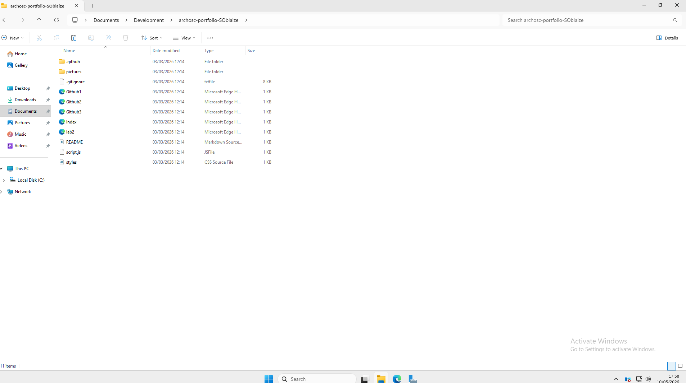
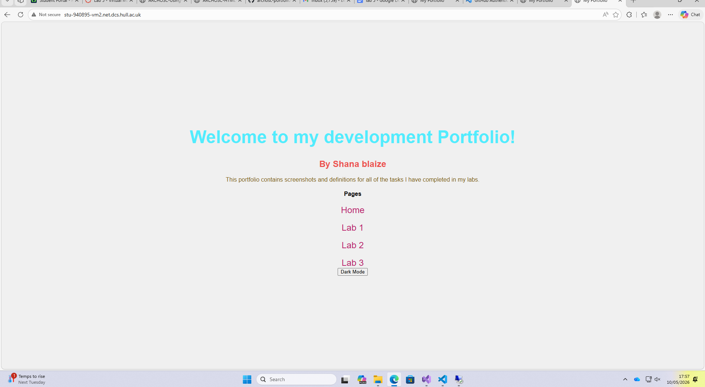
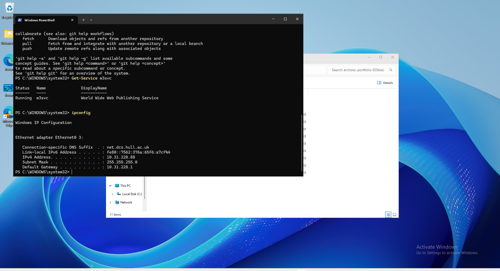
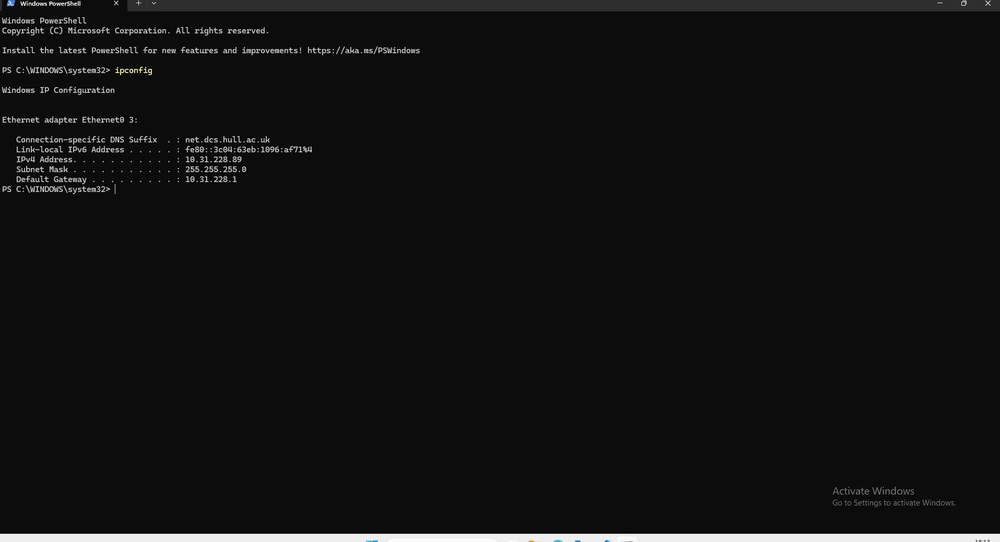
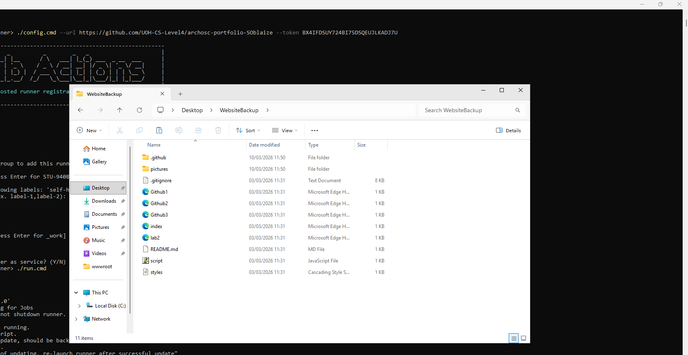

VM Lab
1. Installing GitHub on VM1
This is evidence that GitHub has been installed on my Virtual Machine 1.

2. Creating the Portfolio Folder
A folder for my ARCHOSC project portfolio has been created inside VM1.

3. Cloning Portfolio Files
Folders and files from my portfolio have been cloned from GitHub into VM1.

4. Making a Local Change
This is the change I made to my portfolio to show that it could be accessed and edited from my local machine.

5. VM Setup Continued
Further steps taken during the VM access lab.

6. Final VM Access Step
The final step completed during the VM access lab.

7. Getting IP Addresses with ipconfig
I ran the ipconfig command in the terminal on both VM1 and VM2 to get the IPv4 address of each machine in order to connect them.

8. Testing Connection with Ping
After noting VM2's IPv4 address, I ran the Ping command from VM1. The response confirmed both VMs could communicate with each other.

9. Checking the Server with Test-NetConnection
To verify the server was running on VM2, I entered: Test-NetConnection [VM2sIP] -port 80. This confirmed port 80 was open and the server was active.

10. Runner Listening for Jobs
This is a screenshot of my runner successfully listening for incoming jobs from the GitHub Actions pipeline.

11. VM Development Continued
Further steps completed during the VM development lab.

12. Final VM Development Step
The final step completed during the VM development lab.
